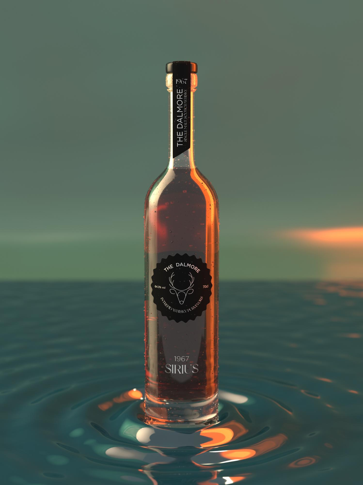
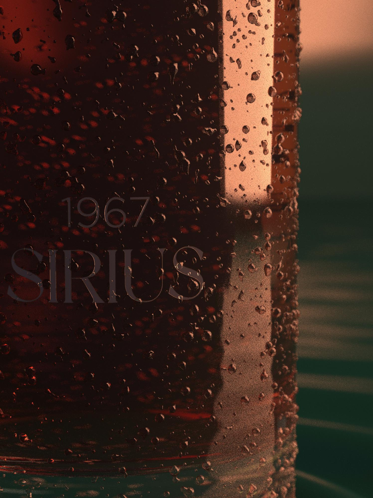
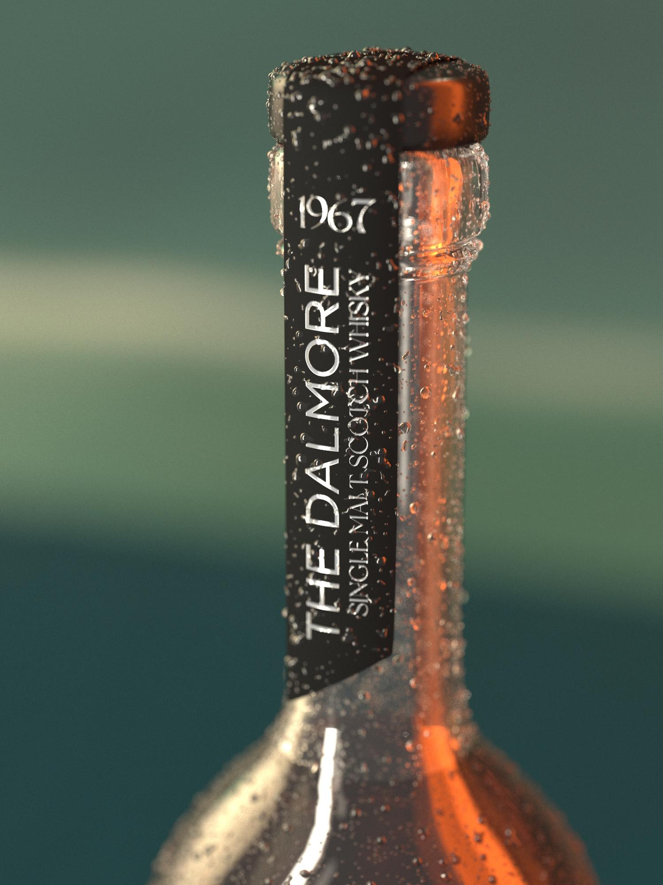
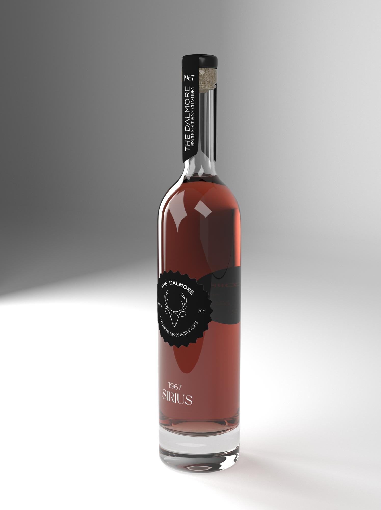
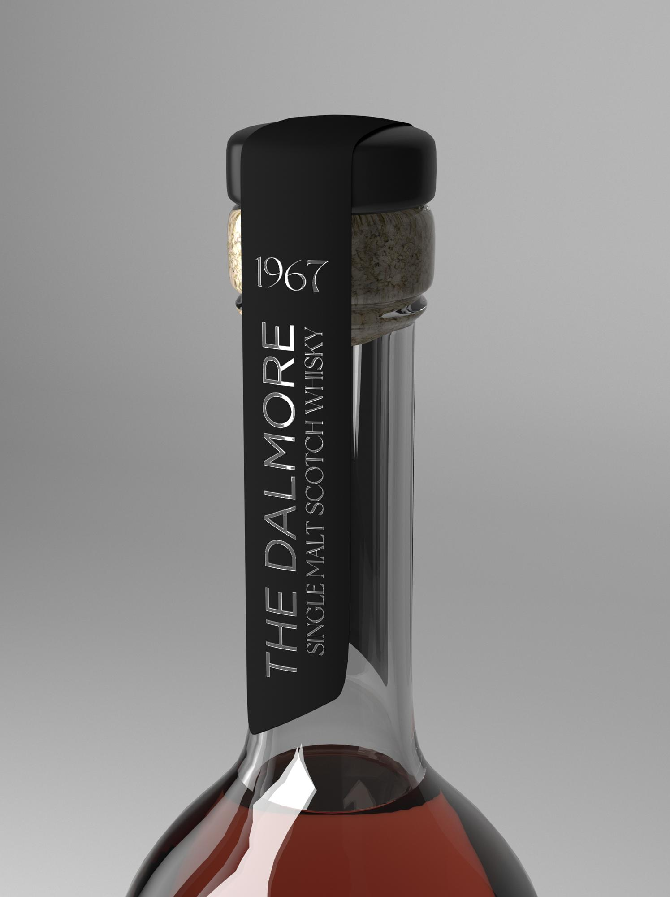
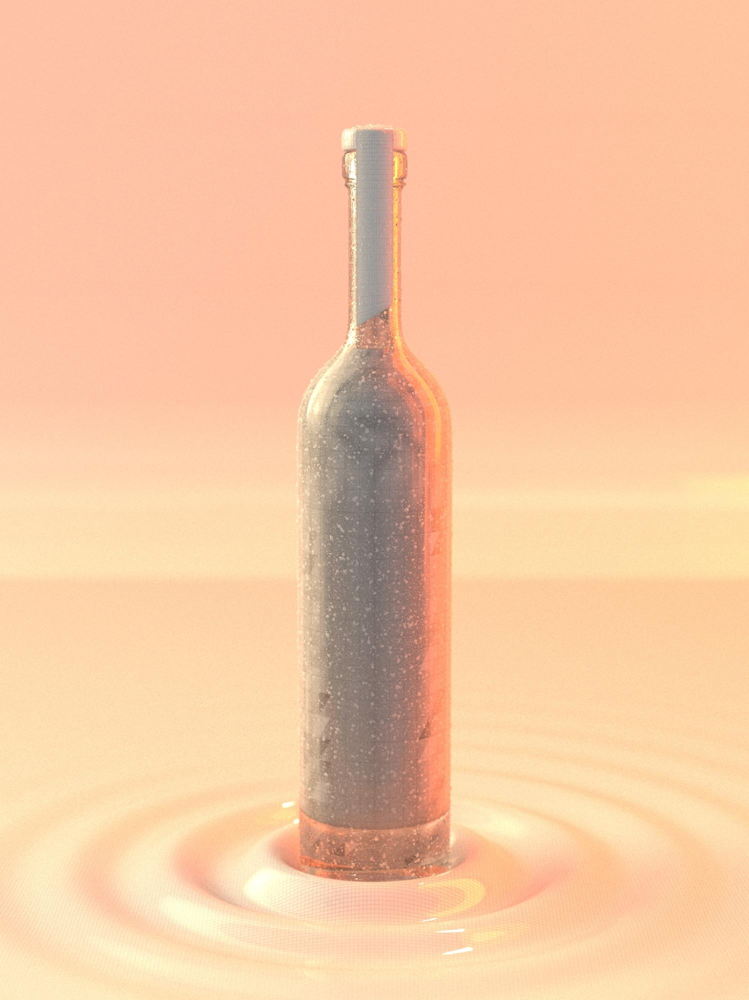
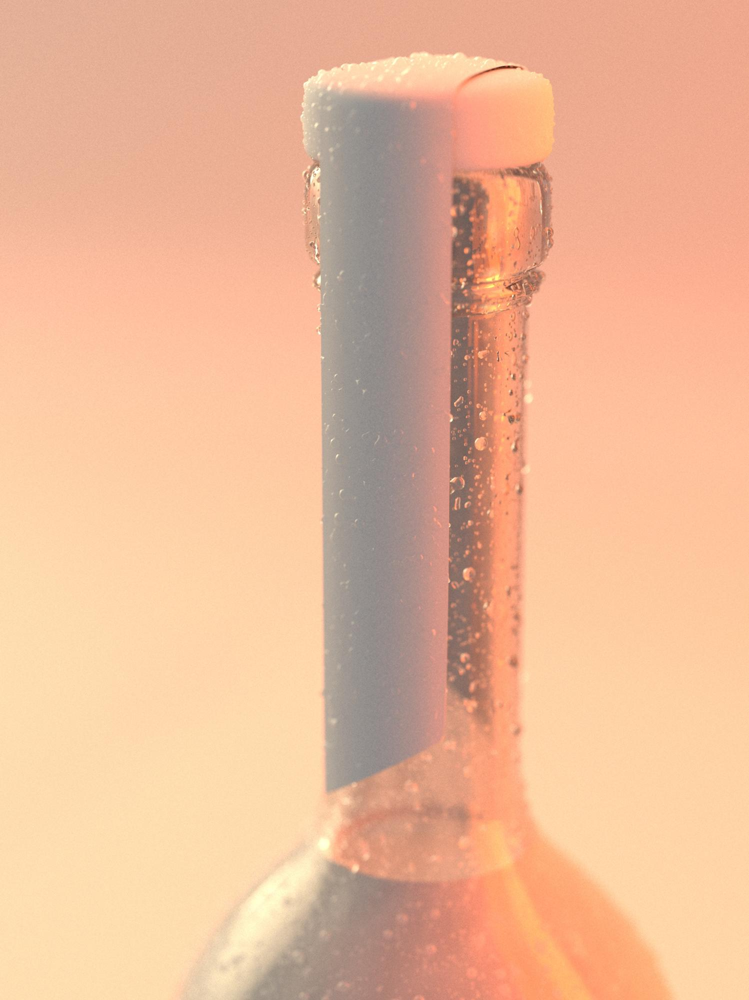

3D Bottle redesign
— Sirius Dalmore
This project focuses on the 3D modeling of a glass bottle for the Sirius Dalmore whisky brand.
Every detail has been taken care of to create a realistic and aesthetically appealing representation of the bottle and its environment.


The glass bottle shows transparency and shine, with the amber whisky modeled to reflect its texture and color. The labels have been redesigned in keeping with the essence of the brand, and to add extra realism, condensation drops were added to simulate a cold bottle. Detailed textures include reflections in the glass and the appearance of the liquid.
The bottle is in a glass looking artificial ocean during a sunset, creating a contrast between the sky and the ocean. The lighting creates reflections and shadows that add depth and visual appeal. The project is presented with several high-quality renderings that capture all the details of the design. The images highlight key aspects of the modeling, showing the bottle and its environment clearly.
This university work demonstrates how 3D modeling can transform a bottle into a work of art, combining technique and creativity for a stunning visual presentation. The tools used for the creation of this proyect were Adobe Illustrator, Adobe photoshop, and 3ds Max.



